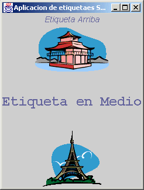
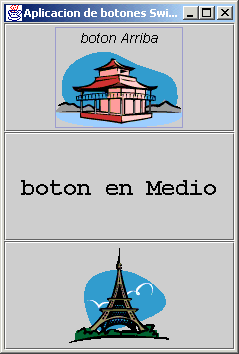

Módulo 4:
Interfaz Gráfica 
2. Java Swing
Java Swing es una biblioteca de Java que nos permite ver elementos gráficos revisados anteriormente pero con adiciones más avanzadas que permiten tener una interfaz más amigable, con dibujos, etc.
Para mostrar esto empezamos con un ejemplo de una aplicación gráfica:
import java.awt.*;
import javax.swing.*;
public class AplicacionEtiquetaSwing extends JPanel {
private JLabel etiquetaArriba;
private JLabel etiquetaMedio;
private JLabel etiquetaAbajo;
public static void main(String[] args) {
JFrame frame = new JFrame("Aplicacion de etiquetaes Swing");
frame.setContentPane(new AplicacionEtiquetaSwing());
frame.setDefaultCloseOperation(JFrame.EXIT_ON_CLOSE);
frame.pack();
frame.setVisible(true);
}
public AplicacionEtiquetaSwing() {
setLayout(new GridLayout(3, 1));
ImageIcon icono1 = new ImageIcon("JAPAN.gif", "JAPAN");
ImageIcon icono2 = new ImageIcon("PARIS.gif",
"PARIS");
etiquetaArriba = new JLabel("Etiqueta Arriba", icono1, JLabel.CENTER);
etiquetaMedio = new JLabel("Etiqueta en Medio");
etiquetaAbajo = new JLabel(icono2);
etiquetaArriba.setVerticalTextPosition(JLabel.TOP);
etiquetaArriba.setHorizontalTextPosition(JLabel.CENTER);
etiquetaArriba.setFont(new Font("Helvetica", Font.ITALIC, 14));
etiquetaMedio.setHorizontalAlignment(JLabel.CENTER);
etiquetaMedio.setFont(new Font("Courier", Font.BOLD, 24));
add(etiquetaArriba);
add(etiquetaMedio);
add(etiquetaAbajo);
}
}
La cual muestra lo siguiente:

Es fácil añadir estos elementos a los componentes gráficos utilizados anteriormente.
Como la aplicación lo muestra, en lugar de utilizar el elemento Label, se utiliza el JLabel, y así para todos los elementos gráficos que corresponden a los revisados anteriormente pertenecientes a la biblioteca java.awt, pero ahora estos los obtenemos de la biblioteca javax.swing.
Si utilizamos la misma aplicación, pero ahora con botones, observamos que es muy sencillo hacer uso de esto en la siguiente aplicación:
import java.awt.*;
import javax.swing.*;
public class AplicacionBotonSwing extends JPanel {
private JButton botonArriba;
private JButton botonMedio;
private JButton botonAbajo;
public static void main(String[] args) {
JFrame frame = new JFrame("Aplicacion de botones Swing");
frame.setContentPane(new AplicacionBotonSwing());
frame.setDefaultCloseOperation(JFrame.EXIT_ON_CLOSE);
frame.pack();
frame.setVisible(true);
}
public AplicacionBotonSwing() {
setLayout(new GridLayout(3, 1));
ImageIcon icono1 = new ImageIcon("JAPAN.gif", "JAPAN");
ImageIcon icono2 = new ImageIcon("PARIS.gif",
"PARIS");
botonArriba = new JButton("boton Arriba", icono1);
botonMedio = new JButton("boton en Medio");
botonAbajo = new JButton(icono2);
botonArriba.setVerticalTextPosition(JButton.TOP);
botonArriba.setHorizontalTextPosition(JButton.CENTER);
botonArriba.setFont(new Font("Helvetica", Font.ITALIC, 14));
botonMedio.setHorizontalAlignment(JButton.CENTER);
botonMedio.setFont(new Font("Courier", Font.BOLD, 24));
add(botonArriba);
add(botonMedio);
add(botonAbajo);
}
}
Ejecutada quedaria como:

Revisamos de la aplicación que los elementos gráficos ahora contienen más facilidades que los manejados anteriormente.
Es importante que visites la biblioteca java.swing para que conozcas mas sobre los diferentes elementos gráficos de Swing y las diferentes opciones que sus métodos te dan